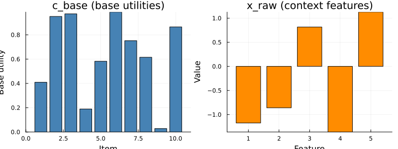
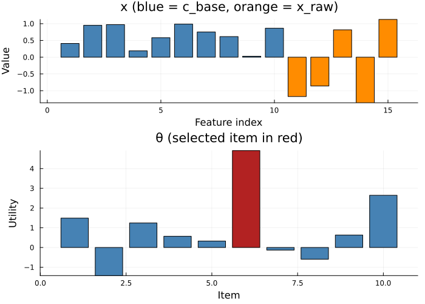
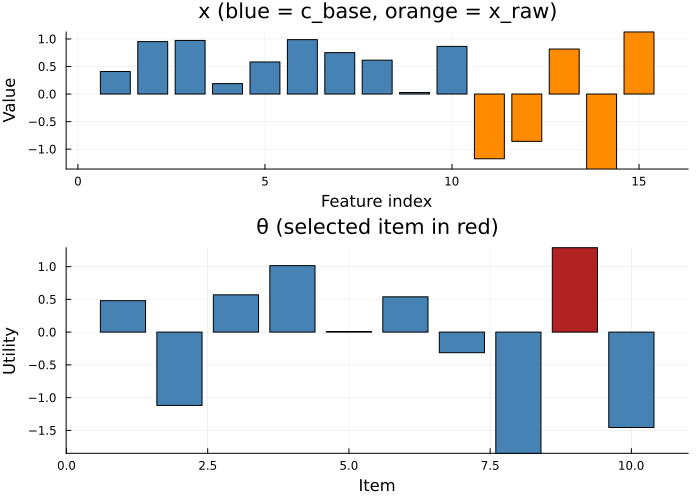

Contextual Stochastic Argmax
Select the best item from a set of n items with stochastic utilities: each scenario draws a different utility vector, but utilities depend on observable context features. This is a toy benchmark designed so that a linear model can exactly recover the optimal context-to-utility mapping.
using DecisionFocusedLearningBenchmarks
using Plots
b = ContextualStochasticArgmaxBenchmark()ContextualStochasticArgmaxBenchmark{Matrix{Float32}}(10, 5, Float32[-1.7788635 1.5422713 … -0.22188981 0.6461981; 1.2941018 0.87786853 … 0.7245647 1.185831; … ; 1.297963 -1.0409211 … 0.45134676 1.2629694; -1.2267739 0.29884058 … -1.5710442 -1.8515824], 0.1f0)By default, generate_dataset returns unlabeled samples (y = nothing) for this benchmark. A target_policy must be provided to attach labels. Here we use the anticipative oracle: it returns the item with the highest realized utility for each scenario, giving one labeled sample per scenario per instance.
anticipative = generate_anticipative_solver(b)
policy =
(ctx, scenarios) ->
[DataSample(ctx; y=anticipative(ξ), extra=(; scenario=ξ)) for ξ in scenarios]
dataset = generate_dataset(b, 20; target_policy=policy, seed=0)
sample = first(dataset)DataSample(x=Float32[0.409521, 0.951421, 0.972709, 0.189452, 0.582645, 0.987582, 0.751793, 0.615489, 0.0283986, 0.865268, -1.17424, -0.859058, 0.816649, -1.3611, 1.12722], y=Float32[0.0, 0.0, 0.0, 0.0, 0.0, 1.0, 0.0, 0.0, 0.0, 0.0], c_base=Float32[0.409521, 0.951421, 0.972709, 0.189452, 0.582645, 0.987582, 0.751793, 0.615489, 0.0283986, 0.865268], x_raw=Float32[-1.17424, -0.859058, 0.816649, -1.3611, 1.12722], scenario=Float32[1.48889, -1.42605, 1.24268, 0.566928, 0.32675, 4.91234, -0.131129, -0.593814, 0.630233, 2.64751])Observable input
At inference time the model observes x = [c_base; x_raw]. plot_context shows both components: base utilities c_base (left) and context features x_raw (right):
plot_context(b, sample)
A training sample
Stochastic benchmarks have no single ground-truth label: the optimal item depends on which utility scenario is realized. We label each sample with the anticipative oracle, which returns the best item given the realized scenario ξ.
Each labeled sample contains:
x: feature vector[c_base; x_raw](observable at train and test time)y: optimal item for the realized scenario ξ (one-hot; anticipative oracle label)extra.scenario: realized utility vector ξ (available only during training)
Top: feature vector x. Bottom: realized scenario ξ acting as the cost vector, with the anticipative-optimal item in red:
plot_sample(b, DataSample(sample; θ=sample.scenario))
Untrained policy
A DFL policy chains two components: a statistical model predicting expected item utilities:
model = generate_statistical_model(b) # linear map: features → predicted expected utilitiesDense(15 => 10; bias=false) # 150 parametersand a maximizer selecting the item with the highest predicted utility:
maximizer = generate_maximizer(b) # one-hot argmaxone_hot_argmax (generic function with 1 method)A randomly initialized policy selects items with no relation to their expected utilities. Top: feature vector x. Bottom: predicted utilities θ̂ with the selected item in red:
θ_pred = model(sample.x)
y_pred = maximizer(θ_pred)
plot_sample(b, DataSample(sample; θ=θ_pred, y=y_pred))
Problem Description
Overview
In the Contextual Stochastic Argmax benchmark, $n$ items have random utilities that depend on observable context. Per instance:
- $c_\text{base} \sim U[0,1]^n$: base utilities (stored in
context) - $x_\text{raw} \sim \mathcal{N}(0, I_d)$: observable context features
- Full features: $x = [c_\text{base}; x_\text{raw}] \in \mathbb{R}^{n+d}$
The realized utility (scenario) is drawn as:
\[\xi = c_\text{base} + W \, x_\text{raw} + \varepsilon, \quad \varepsilon \sim \mathcal{N}(0, \sigma^2 I)\]
where $W \in \mathbb{R}^{n \times d}$ is a fixed unknown perturbation matrix.
The task is to select the item with the highest realized utility:
\[y^* = \mathrm{argmax}(\xi)\]
A linear model $\theta = [I \mid W] \cdot x$ can exactly recover the optimal solution in expectation.
Key Parameters
| Parameter | Description | Default |
|---|---|---|
n | Number of items | 10 |
d | Context feature dimension | 5 |
noise_std | Noise standard deviation σ | 0.1 |
Baseline Policies
- SAA: selects the item with highest mean utility over available scenarios.
DFL Policy
\[\xrightarrow[\text{Features}]{x = [c_\text{base}; x_\text{raw}]} \fbox{Linear model} \xrightarrow{\theta \in \mathbb{R}^n} \fbox{argmax} \xrightarrow{y}\]
Model: Dense(n+d → n; bias=false): can in principle recover the exact mapping $[I \mid W]$ from training data.
Maximizer: one_hot_argmax.
This page was generated using Literate.jl.